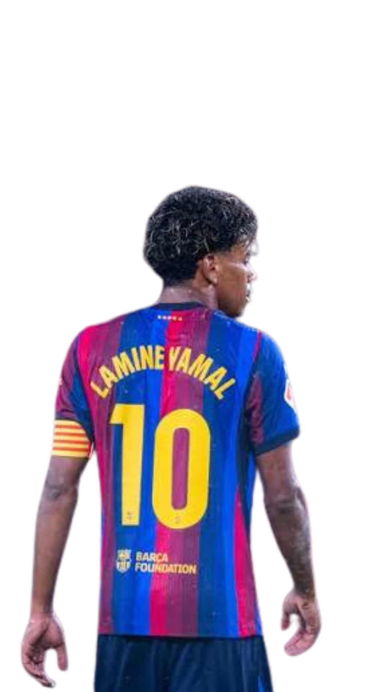

Conheça os melhores jogadores da atualidade

Lamine Yamal Nasraoui Ebana nasceu em Esplugues de Llobregat e rapidamente ascendeu pelas categorias de base do Barcelona (La Masia). Com uma visão de jogo invejável e dribles desconcertantes, ele quebrou recordes de precocidade na La Liga e na UEFA Champions League, tornando-se titular absoluto e peça fundamental tanto no clube quanto na Seleção Espanhola.
Perfil do Jogador
Posição: Ponta Direita / Ala
Nacionalidade: Espanhol
Time: FC Barcelona
Número: 19
Pé Principal: Canhoto
Lamine Yamal é um talento geracional do futebol europeu. Seu dinamismo, velocidade e tomada de decisão refinada o destacam como um dos atletas mais letais e criativos do mundo no mano a mano.
Consagrado como um dos melhores jovens jogadores do planeta, Yamal teve papel crucial na conquista da Eurocopa com a Espanha, colecionando prêmios individuais de prestígio internacional e encantando torcedores ao redor do globo com sua genialidade em campo.